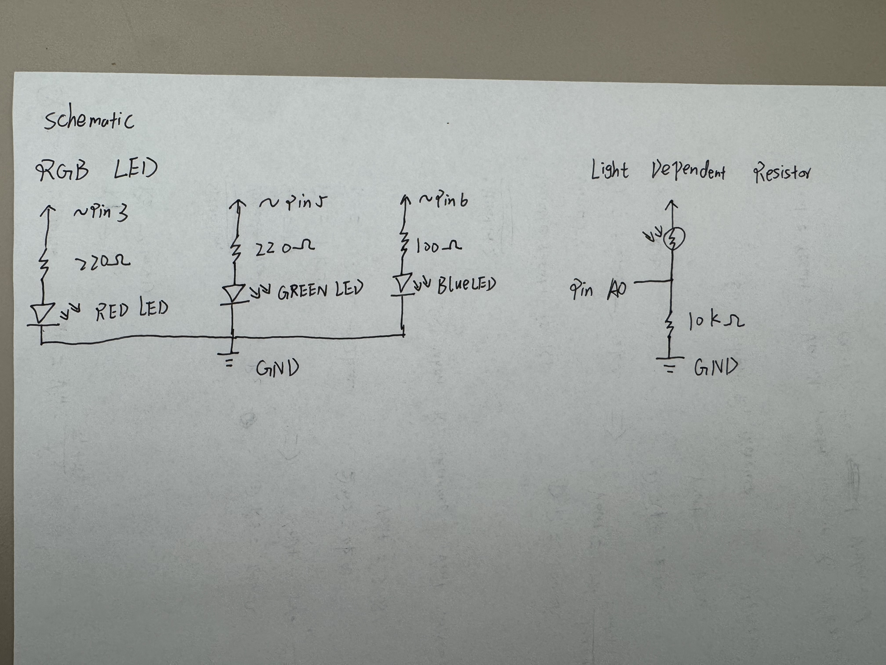
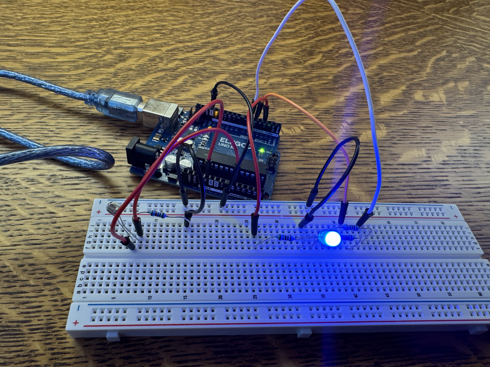
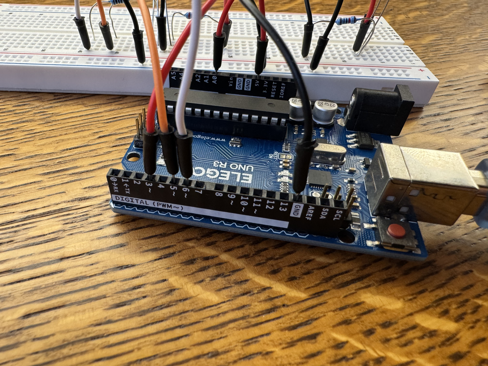
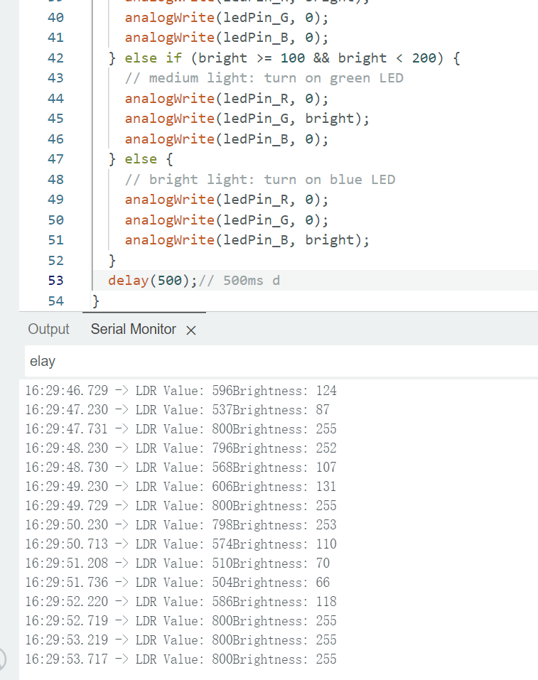
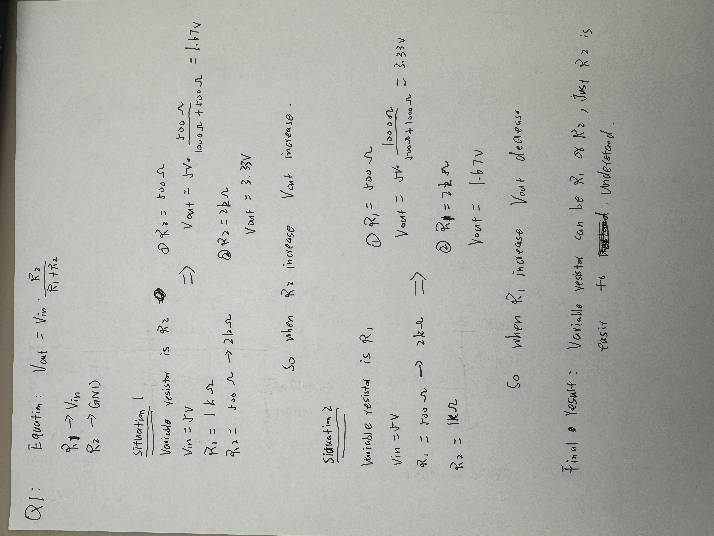
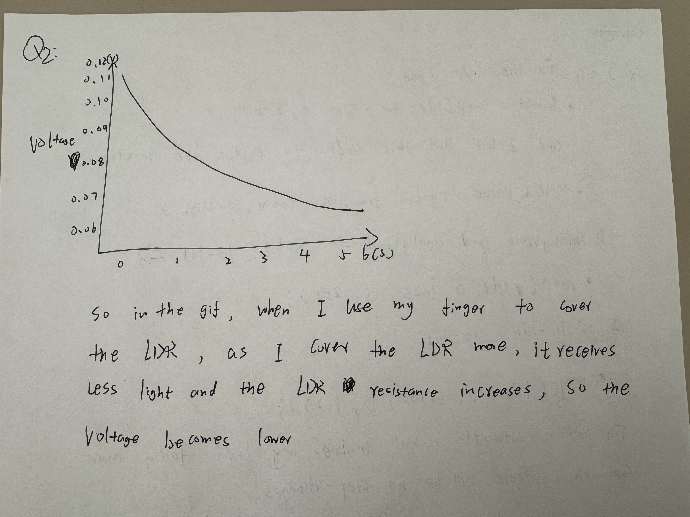
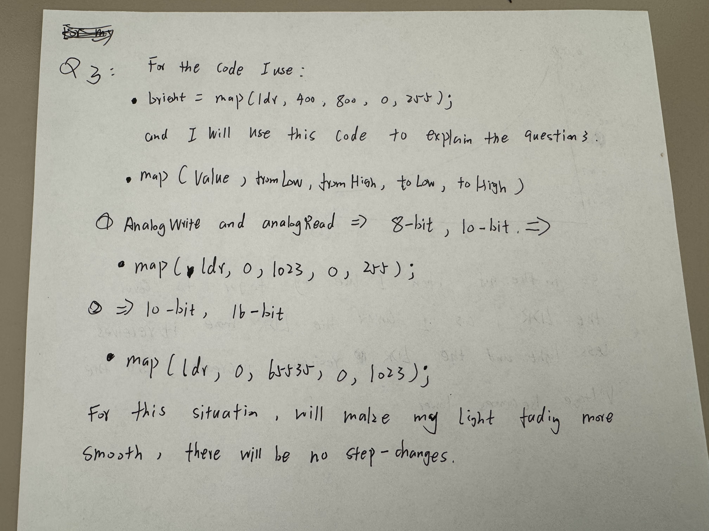

This is my circuit's operation

At first I didnt use finger to cover the LDR, and the light show blue, when I cover LDR, the light show green, and cover harder the light show red
Here is all the documentation for assignment 3!
This is my schematic
I use 220 ohm resisters for Red and Green LED light, and 100 ohm for blue LED light.
The Red and Greem votage drop is 1.8v, and blue is 3.2 v, so for the equation V = I + R to get the R for red and green is 160 ohm, so I choose 220 ohm for these two lights resisters. for Blue the result is 85 ohm, so I choose 100 ohm to be the resister. For the LDR, The resistor must be large enough to avoid significant current flow when the brightness is changed, so I choose 10k ohm be the resistor
This is my circuit
 Use RGB light to integrate with the LDR, the red light connect wiht Pin 3, Green with Pin 5, and Blue with Pin 6, and for LDR connet with Pin A0
This is my firmware
/*
Assignment 3: input output
*/
int ledPin_R = 3; // Red LED pin
int ledPin_G = 5; // Green LED pin
int ledPin_B = 6; // Blue LED pin
int ldrPin = A0; // LDR pin
int ldr = 0; // LDR sensor value
int bright = 0;// variavle for brightness
void setup() {
// initialize LED pins as outputs
pinMode(ledPin_R, OUTPUT);
pinMode(ledPin_G, OUTPUT);
pinMode(ledPin_B, OUTPUT);
Serial.begin(9600); // set baud rate 9600
}
void loop() {
// read the LDR value
ldr = analogRead(ldrPin);
// constrain and map the LDR to set a range for brightness(0-255)
ldr = constrain(ldr, 400, 800); // restrict sensor range
bright = map(ldr, 400, 800, 0, 255); // map to brightness range
// print the LDR and brightness values to the serial monitor
Serial.print("LDR Value: ");
Serial.print(ldr);
Serial.print("Brightness: ");
Serial.println(bright);
if (bright < 100) {
// low light: turn on red LED
analogWrite(ledPin_R, bright);
analogWrite(ledPin_G, 0);
analogWrite(ledPin_B, 0);
} else if (bright >= 100 && bright < 200) {
// medium light: turn on green LED
analogWrite(ledPin_R, 0);
analogWrite(ledPin_G, bright);
analogWrite(ledPin_B, 0);
} else {
// bright light: turn on blue LED
analogWrite(ledPin_R, 0);
analogWrite(ledPin_G, 0);
analogWrite(ledPin_B, bright);
}
delay(500);// 500ms delay for serial monitor
}
Feature: I use code to set 3 different level of brightness, so when user do not use finger to cover the LDR will show blue color in the normal inside room light condition, and whenI use my finger cover the LDR a little bit will go to the second level to show the green color of the RGB LED light, and when I cover the LDR more harder, will show the red color of the LED light
This is my output from the serial monitor
the serical monitor show the right now brightness value of the LDR
This is my circuit's operation
At first I didnt use finger to cover the LDR, and the light show blue, when I cover LDR, the light show green, and cover harder the light show red
Additional questions:
Question 1:
Question 2:
Question 3:
